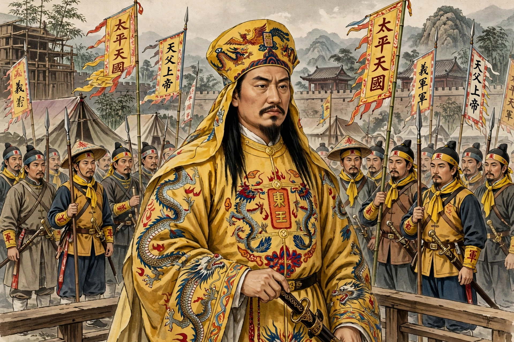

Yang Xiuqing (died 2 September 1856), nicknamed Yang the Fourth, was the East King of the Taiping Heavenly Kingdom and its most capable military and administrative leader during the Taiping Rebellion against Qing China.

A charcoal burner and orphan from Guangxi, Yang joined the God Worshipping Society and rose through claimed possessions by the voice of God the Father, which gave him authority to speak divine commands.
As East King, Yang directed Taiping strategy, finance and discipline, leading the capture of Nanjing in 1853, which became the Taiping capital Tianjing, and organising northern and western expeditions.
Yang's growing power and claims threatened Hong Xiuquan, who in 1856 ordered Wei Changhui to kill him. Yang and thousands of followers were massacred in the Tianjing Incident, a purge that fatally weakened the Taiping cause.
Historians regard Yang as the Taiping movement's organisational genius; his death marked its turning point toward decline, later confronted by officials such as Li Hongzhang.